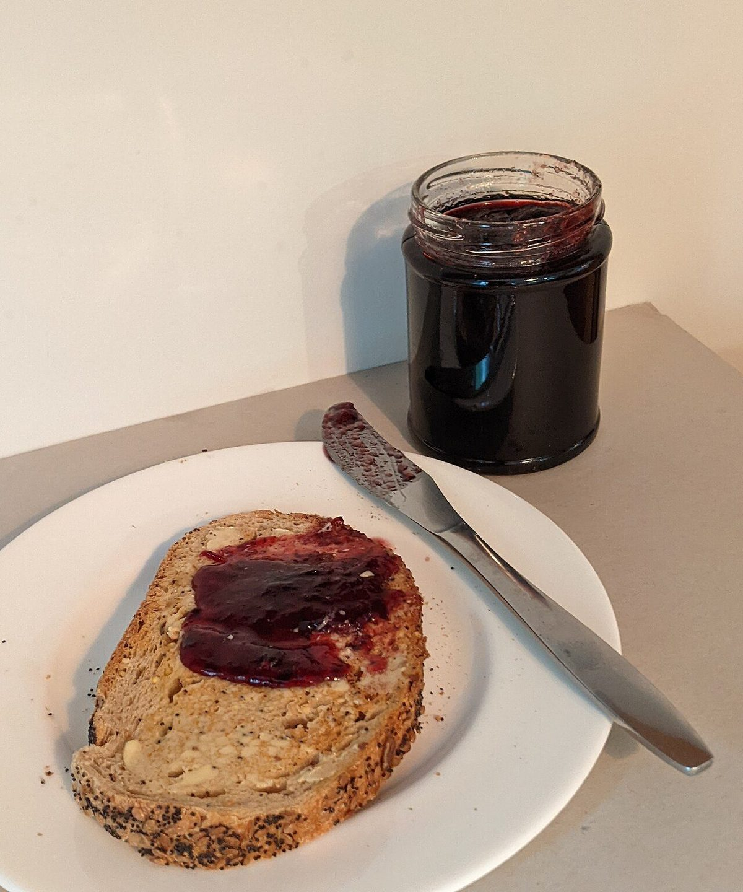

このサイトは制作側が作成した試作サンプルです。コンセプト・文言は制作側の案で、お店の理念や実際の内容ではありません。
 イメージ写真
イメージ写真- 住所
- 香川県高松市前田東町743-10
- @iisand0110
営業時間・定休日: 準備中(お問い合わせください)
パンのある毎日のイメージ
ここに並ぶのは、雰囲気をお伝えするためのイメージ写真です。



掲載している写真はフリー素材のイメージで、お店の実際の写真・商品ではありません。日本国外など他地域で撮影されたもの、撮影地が不明なものを含みます。
写真はフリー素材のイメージです。お店の商品ではありません。
 イメージ写真
イメージ写真ジャムの赤と、焼き色の茶。
このサイトの配色は、写真に写る焼き色の茶とジャムの赤から起こしました。見る方が気持ちよく読み進められる雰囲気を目指した、制作側の案です。
制作側の案です。お店の理念ではありません。
- ラズベリー
- チョコ
- ローズ
- マスタード
(配色サンプル)